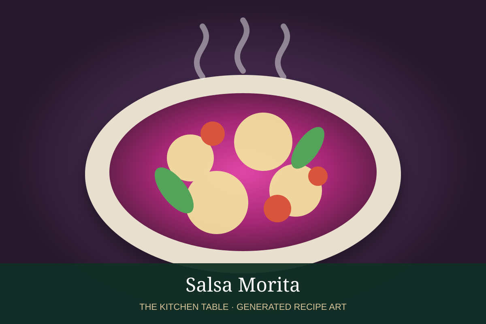

← Back to all recipes
SAUCE · MEXICAN
Salsa Morita
A smoky salsa made with morita chiles, roasted tomato, garlic, onion, and warm spices.
25 minMakes about 2 cups

Photo: Gastrolab
Ingredients
- 5 dried morita chiles
- 4 Roma tomatoes
- 1/4 white onion
- 2 garlic cloves
- 2 black peppercorns
- Pinch of ground clove
- 1 tbsp neutral oil
- 1 tsp kosher salt
Preparation
- Toast morita chiles briefly, then soak until pliable.
- Roast tomatoes, onion, and garlic until charred.
- Blend or grind all ingredients with peppercorns, clove, and salt.
- Heat oil and cook the salsa for 4 to 5 minutes.
- Adjust salt and texture with a splash of water if needed.